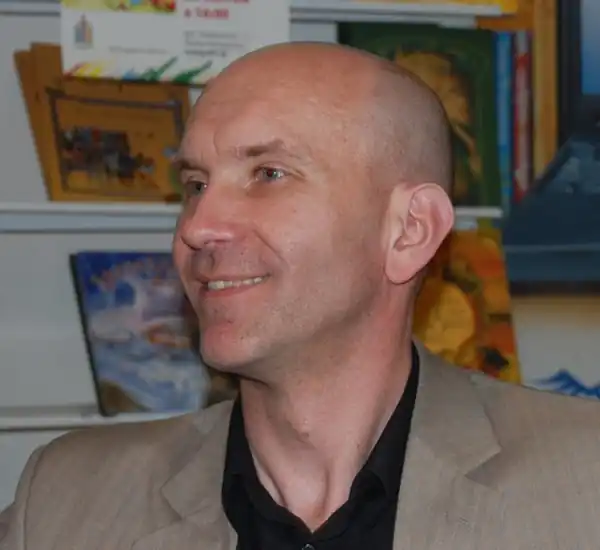

Андрій Бачинський — український дитячий письменник. Автор романів і повістей для підлітків, які популяризують науку та шкільні дисципліни.
Народився 19 січня 1968 року на Івано-Франківщині (у місті Калуш). Змалечку захоплювався читанням і конструюванням. Обидва хобі й визначили подальшу долю Бачинського: моделювання — професійне навчання, а читання дало поштовх до майбутнього написання книжок.
Спершу в біографії Андрія Бачинського не було й натяку на письменництво. Автор учився у Національному університеті "Львівська політехніка" на радіотехнічному факультеті. І тільки у 2011 році почав пробувати себе в ролі дитячого письменника. Серед книг Андрія Бачинського переважають пригодницькі повісті для дітей і підлітків. Найпопулярніші його книжки — дилогія "Детективи в Артеку", "З Ейнштейном у рюкзаку", "Трикутник Зевса" та інші. Його твори неодноразово номінували на премії як кращі дитячі чи підліткові книжки, а "140 децибелів тиші" у 2015 стала "Книгою року BBC". Твори Андрія Бачинського мають яскраве пригодницьке спрямування. Головні герої його книжок завжди потрапляють у вир різноманітних мандрів, цікавих авантюр, карколомних випробувань і таємничих загадок. Не оминає автор і висвітлення соціально важливих тем: питання прийняття себе та оточення, іншості, справедливості, рівності тощо. Окрема родзинка деяких його творів — популяризація науки та шкільних дисциплін. У цих творах, наприклад, знання законів фізики чи математичних формул допомагають головним героям вибиратися з будь-якої халепи. А самі читачі розуміють, що будь-яка наука – важлива, потрібна і зовсім, як може здатися, на перший погляд, не нудна. Джерело: Книгарня Є